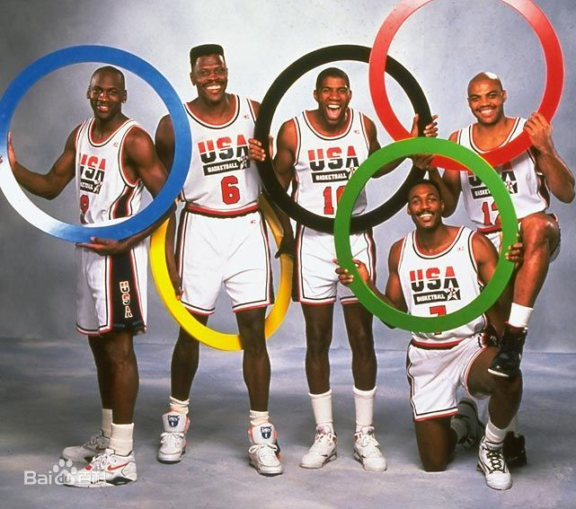

美国国家男子篮球队（USA Basketball Team, Dream Team）成立于1936年，由美国篮球协会拥有，是一支代表美国参加各种国际篮球赛事的球队，昵称梦之队（Dream Team）。
狭义的“梦之队”是人们对在巴塞罗那举行的第二十五届奥运会上夺得金牌的美国男篮的称呼。这支球队因为囊括了当时几乎所有的NBA顶尖选手而被人们看作是有史以来最为强大的篮球队，着实如梦如幻。但当时并没有后来“梦之队”的叫法，该队本身也只叫“梦之队”而非“梦一队”。 而广义上的“梦之队”则是指自1992年之后（而非92年前），历届由NBA职业球员为骨干所组成的参加男篮世锦赛或夏季奥运会的美国男篮（注：参加1998年世界篮球锦标赛的那一支美国大陆篮球协会CBA/美国大学生队一般不认为是梦之队），依成军时间先后顺序分别被冠以梦二队、梦三队……之称。第二支梦之队（即“梦二队”）在1994年的多伦多世界篮球锦标赛上夺取了冠军。而在1996年亚特兰大奥运会和2000年悉尼奥运会上，梦三队和梦四队也都拿到了奥运金牌。
（梦一队合影）
1989年国际篮联（FIBA）更改规则，允许职业球员参加国际篮球赛事。这使美国篮协决定组建以NBA职业选手为成员的国家队，以昭示美国在世界篮坛的顶级声威。故在1992年，美国篮协立即找齐美职篮联盟当时最杰出的球员，组建公认史上最优秀的篮球队。
于是在美洲区预选赛中六战全胜之后，有史以来第一支网罗众多NBA明星球员的“梦之队”立即作为美国男子篮球奥运代表队，挺进1992年在西班牙巴塞罗那举行的夏季奥运会。
由于这次搜集以成名球员为主，因而队员年龄都偏大。除了还在杜克大学就读的莱特纳外，其他球员都正处于当打之年，最年轻的大卫・罗宾逊及斯科蒂・皮蓬已27岁了，其他的队员如乔丹、斯托克顿、巴克利、穆林、尤因等也都年届30，而魔术师约翰逊和大鸟伯德更是都为33岁以上的传奇老将了。这一队伍包揽了当时NBA的超级巨星，包括了10名后来入选NBA史上50大巨星的名将。以至于魔术师在大赛前便玩笑说若是无法拿到冠军就全队自杀。然而由于一些“幕后”细节，梦一队仍然也是有一些争议的。

因为在迈克尔・乔丹的首次全明星赛上不给”飞人“传球，并且亲率拥有杜马斯、兰比尔、罗德曼、马洪、萨利、阿奎尔等队友的“坏小子”底特律活塞队在80年代末的东部联盟常年压制崛起中的芝加哥公牛队，活塞领袖兼队长之一的“微笑刺客”伊塞亚・托马斯与乔丹素有嫌隙。在梦之队征集时，乔丹就公开向篮协声称与以赛亚誓不两立。NBA有史以来最伟大的组织后卫之一由此便与梦之队擦肩而过，名额被有伤在身的后来晋升联盟史上抢断/助攻双冠王的约翰・斯托克顿顶替。后来在活塞队1991年12月17日和犹他爵士队的交手中，托马斯狠狠地一对一教训打爆了带伤上场的斯托克顿，恼得老斯队友“邮差”马龙当场挥起铁肘把“微笑刺客”打成脑震荡。一气之下的乔丹宁愿力荐组委会选择勤恳兢业的斯托克顿也要取代攻守俱佳的托马斯，并且等于间接认同了梦一队友马龙的报复性动作替自己出气的方式，也是由于这样盐湖城的黑白双煞才能一起出征西班牙。
现实中， 托马斯得罪乔丹更多是因为他是球员工会主席。80年代末90年代初的巨星们的工资上涨速度非常快，但与之相对的是，中下层球员的工资被急剧压缩。作为球员工会主席，托马斯力主提升球员平均工资，但资方的要求是：可以提高球员整体工资水平，但必须设置顶薪限制。限制顶薪就触及到了乔丹为首的一批巨星的利益，代表中下层利益的托马斯和代表最顶级巨星的乔丹在这个问题上的冲突其实才是两个人关系紧张的核心所在。 球场上的对抗只是双方恩怨的一小部分而已。但在2003年乔丹第三次隐退时，东部明星队主教练正是托马斯，他却根本没有限制乔丹的上场时间，因此乔丹才得以在自己最后一届全明星赛上得以尽力发挥砍下当时史上总得分第一。赛后，乔丹和托马斯拥抱一笑泯恩仇，两个已经深谙世事的老江湖最终为多年前的矛盾画上了句号。
事实上除了以赛亚・托马斯以外， 梦之一队 梦之一队 当时联盟里出众的组织后卫蒂姆・哈达维和凯文・约翰逊，路易斯安那州立大学的超级新星沙奎尔・奥尼尔都被公认有进入梦之队的实力，而最终入选的“上帝左手”克里斯・穆林与白人学生克里斯蒂安・莱特纳（也同为队内仅有的未入选NBA50大的两人）其实力也都并不服众，这也算是梦之队仅有的瑕疵。
然而，这并未妨碍他们每场横扫对手44分后夺取1992年巴塞罗那奥运会冠军，查尔斯・巴克利还以场均18分成为梦之一队的得分王。当时，全球各队与梦之队交手时，无不以获得梦一队成员的签名及合影为荣。梦一队场均能够获得接近60%的命中率，同时将对手命中率压至36%，每场胜出44分，就连分差最少的一场也都赢了有32分之多。
美国男篮战绩统计
世界男子篮球锦标赛（今篮球世界杯）
自1950年开创男篮世锦赛以来，美国队一共赢得过五次冠军，分别是在1954年的巴西世锦赛、1986年的西班牙世锦赛、1994年的加拿大世锦赛和2010年的土耳其世锦赛冠军以及2014年的西班牙首届男篮世界杯（原名世锦赛）冠军，在冠军次数上仅逊色于前南斯拉夫。此外，美国男篮还在1950年的阿根廷世锦赛、1959年的智利世锦赛以及1982年的哥伦比亚世锦赛上三度屈尊亚军，从历史角度看，美国男篮战绩辉煌，但是并未奠定霸主地位。
2019年9月11日，2019年男篮世界杯八强赛，美国男篮对决法国男篮，最终美国79比89不敌对手，遭遇了13年来世界大赛首败，同时世界大赛5连冠被终结。
奥林匹克运动会男子篮球比赛
自1936年参加奥运会篮球项目以来，美国队一共15次夺得金牌，1次摘得银牌，2次夺得铜牌，这样的成绩无人超越，奥运会男子篮球项目的历史几乎就是美国队的历史，除了因为一次抵制奥运会之外，美国队几乎从未让奖牌旁落。2016年8月21日，在2016年里约奥运会男篮决赛中，美国队以96比66战胜塞尔维亚队，获得冠军，连续第三届奥运会完成卫冕。自2004年以来已经在奥运会赛场取得25连胜，过去7届奥运会得到6枚金牌。卡梅隆・安东尼成为首个获得三枚奥运会男子篮球赛金牌的球员。